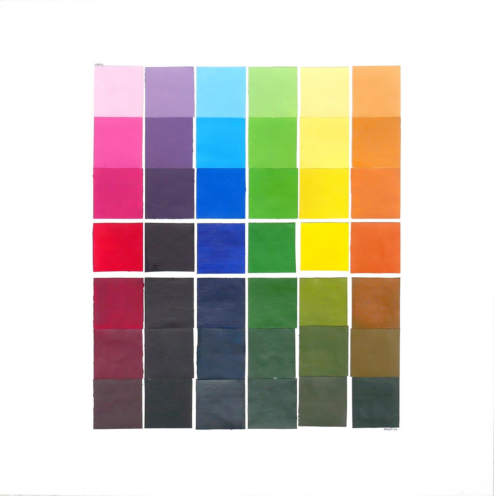
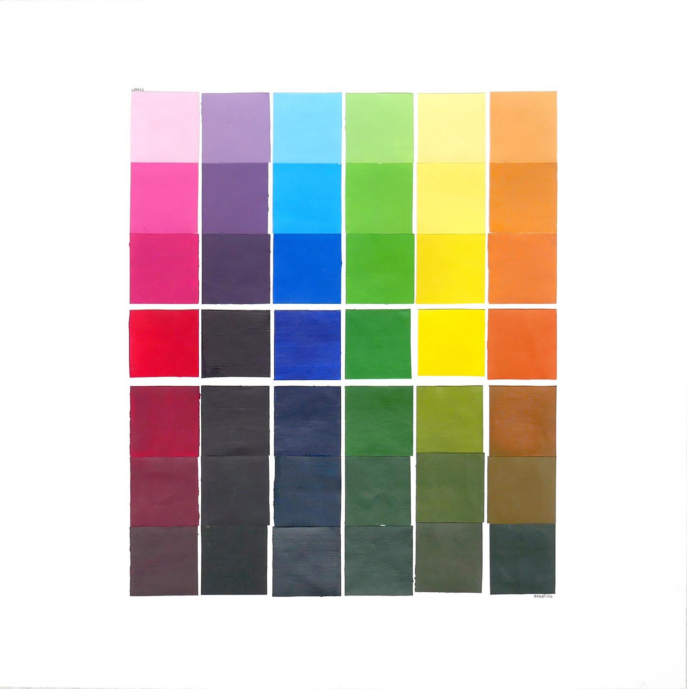

Ce projet est une recherche sur la couleur.
Ces faux carrés, tous de formats différents, sont une recherche colorimétrique pour découvrir la peinture. Dans ma recherche de composition rien n'est carré pour sortir du serieux qu'est la colorimétrie.


 
